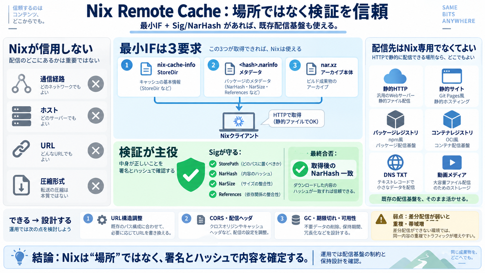

A Nix store is three functions - Farid Zakaria
The only requirement seemed to be a lenient Cross-Origin Resource Sharing (CORS) policy, `access-control-allow-origin: `…

The only requirement seemed to be a lenient Cross-Origin Resource Sharing (CORS) policy, `access-control-allow-origin: `…
`GET /nix-cache-info` returns some metadata about the cache in question. Here is one taken from : ``` StoreDir: /nix/st…
``` - uses: actions/cache@v3 with: # npm cache files are stored in `~/.npm` on Linux/macOS path: ~/.np…
> Note: the Magic Nix Cache doesn't offer a publicly available cache. This means the cache is only usable in CI. Zero to…
# Magic Nix Cache Save 30-50%+ of CI time without any effort or cost. Use Magic Nix Cache, a totally free and zero-conf…